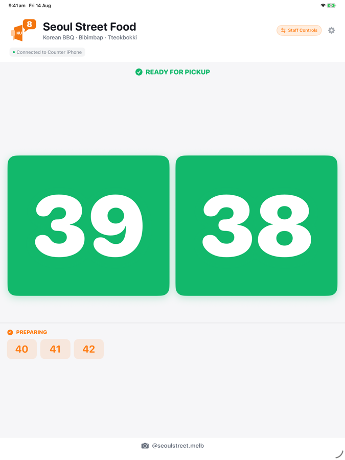
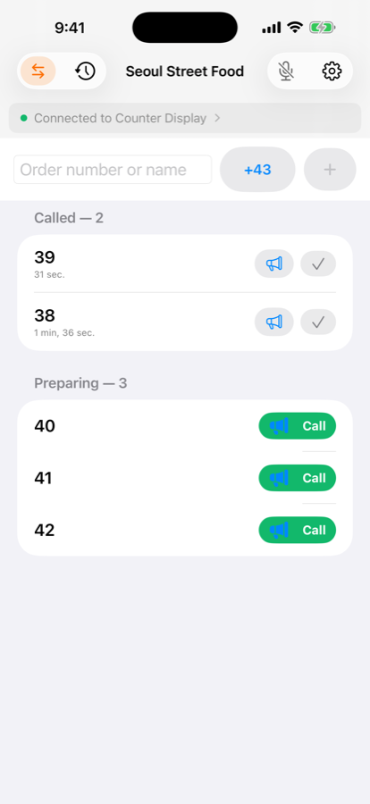

If you've priced out a restaurant pager system, you already know the pitch: a base station, a stack of buzzers, a monthly fee if it's the cloud-connected kind, and a plan for what happens when a customer walks off with one. For a lot of small counters — a food truck, a five-table bakery, a market stall — that's a lot of hardware to buy before you've sold a single coffee.
The devices doing that job at a lot of small counters now are ones you probably already own: a spare iPad propped up as the display, and your phone in your apron pocket as the remote.
One device sits where customers can see it — on the counter, mounted on the wall, or plugged into a TV or monitor over HDMI or AirPlay. The other stays with whoever's calling numbers. Tap a number, and the display shows it large, reads it out loud, and flashes it a few times so it's hard to miss even when the room is loud.

The two devices talk to each other directly — no Wi-Fi network required, and Bluetooth works if there's no internet at all, which matters more than you'd think at a market stall or a truck parked somewhere the signal doesn't reach.

Food trucks, market stalls, cafes, bakeries, takeaway counters, and pretty much anywhere else people already stand around waiting for a number to be called. If a paper ticket roll and a shout across the kitchen is what you're doing today, this is the same idea with a screen that's easier to miss less and a call log you can actually look back at.